Configura
Character creator creation plugin
Flexible framework for building character creators. Allows developers to upload their own 3D model, parses through the options, then creates a character creator scene. Supports modular assets, mesh deformation, skeletal deformation, and materials.
Responsibilities
UI and Backend Developer
- Familiarized self with existing codebase.
- Overhauled existing UI for plugin dock to be more readable and more consistent with Godot inspector.
- Researched and implemented bone deformation feature, allowing users to deform their model's skeleton through code.
- Implemented color swatches, allowing users to preselect an array of colors to use in character creator.
- Consistently updated documentation throughout project to help users.
- Combed through entire codebase cleaning up code to follow good coding conventions, ensuring better team collaboration and improving code readability.
- Submitted reviews, approved pull requests, and merged branches on GitHub.
- Delivered a complete, viable product published to the Godot Asset Store, receiving 145+ downloads.
- Assisted in marketing and engaging with the community through Discord and Godot Forums.
- Continued with technical support, answering community questions.
Process
Overview
Configura began as "Figura", a project built by Audrey Fuller as her Computer Science Master's capstone project. She discovered that there were little to no tools that helped game developers create character creators, and was interested in providing this workflow between artist and developer. She submitted the project to MAGIC Spell Studios, and was accepted to the Traver Creative Technologist Program. This program is a funded entrepreneurism residency focused on technology solutions for creative industries, especially those that make multidisciplinary connections across technology, art, and business. This opened up the project to be further developed by our summer team.
Over the summer, I worked with 3 team members, using an Agile software prototyping process. During our first milestone, we focused on familiarizing ourselves with the codebase and taking note of what could be improved upon. We also refactored and optimized the code. In the second milestone, we began making bigger changes such as a UI overhaul, rebranding, and publishing to the Godot Asset Store. In our last milestone, we added color swatches, dynamic camera movement, and character name saving. Throughout the process, we were supported by the production team at MAGIC Spell Studios and met with the program's namesake John Traver, an RIT alumnus and creator of frame.io.
UI Overhaul
This was the UI of the plugin dock when the project was handed over to the summer team. One of my main tasks was making the UI more usable and legible. After discussion with the team, we determined the most important concerns:
- The options were difficult to read.
- The default checkboxes were misleading, as you could only select one option as the default.
- At first glance, it was difficult to tell which categories were selected to be shown or not.
- Blendshapes appeared in every category that they affected, even though the blendshape slider only appeared in the first cateogory that it affected.
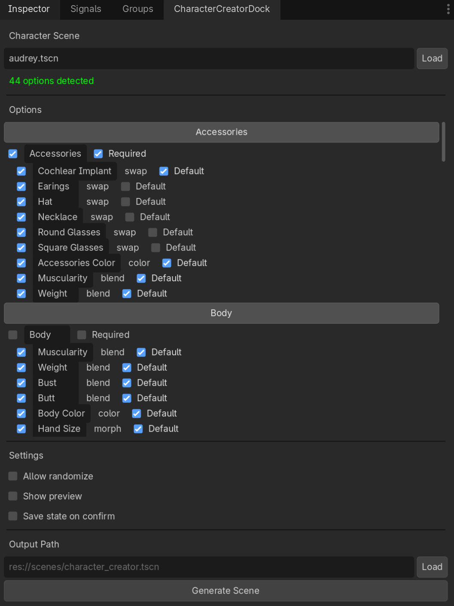
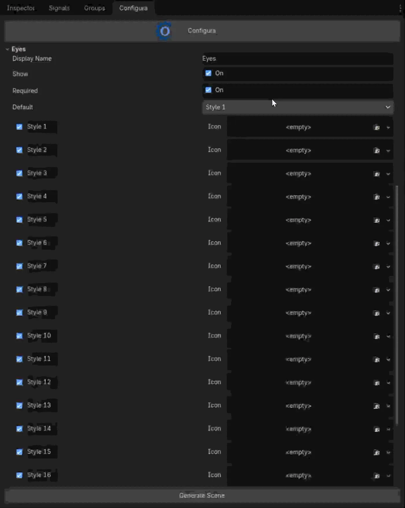
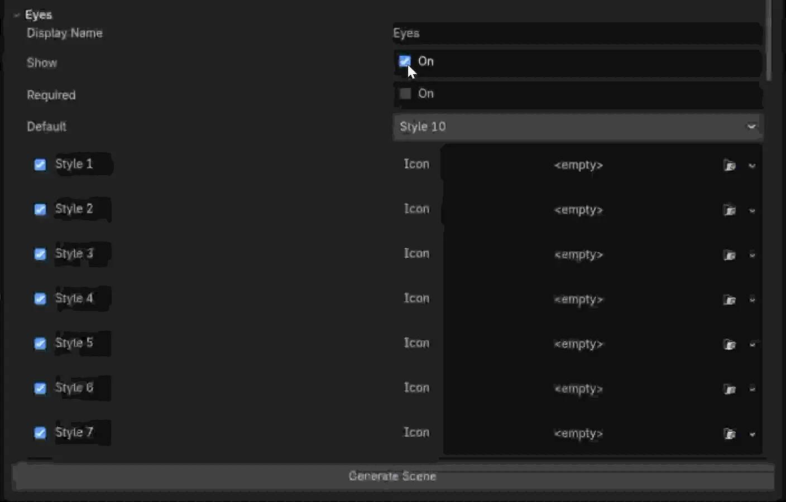
After creating a mockup, I did a complete overhaul of the UI, taking into account all of the previous concerns.
- The style of the options were changed to more closely match the Godot Inspector. The left and right columns were separated and lined up to offer better readability.
- A default menu was created at the top of each category, that allowed the selection of one option.
- When categories were turned off (show = false), all of its options were hidden. Required was set to false, default was set to none, and both were disabled. However, the previously chosen options were still saved, and would be restored if the category was turned back on.
- Blendshape sliders now appeared in the category set by the user's naming convention. The blendshape would not visually appear in other categories, but would still affect them as expected.
I also added additional features:
- When "required" is turned off, "none" is automatically added as an option in the default menu, and would appear in the character creator as an option.
- The dropdown menu updates dynamically. If an option is renamed, the dropdown will reflect this change.
- Each category could be minimized to reduce visual clutter.
Bone Deformations
When I joined the project, bone deformations were done through animations. This meant that the artist would have to create different versions of the model and import it as an animation. Then, the plugin would use the modified version of the model as an animation keyframe and lerp between the original and modified models. This not only meant additional work for the artists, but that the animation tree was busy and difficult to navigate. In addition, it would be tedious to add animations to the model. It also meant that the character creator had to keep several versions of the model, which would not be efficient for larger, more complex models.
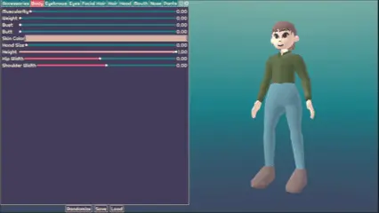
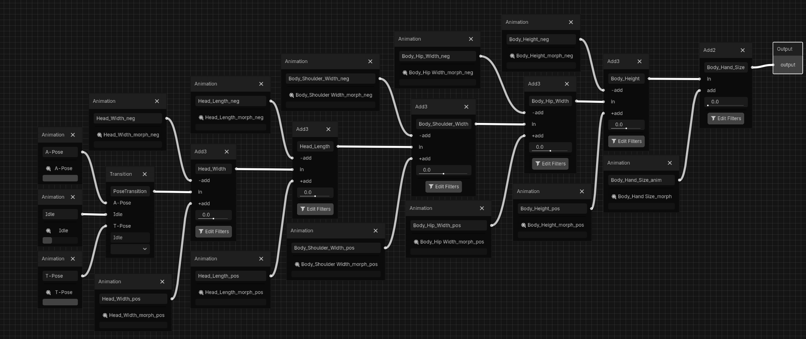
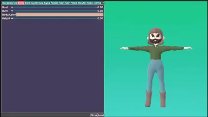
To begin my task, I began researching different methods for bone deformations. I was unable to find many resources for this specific issue. However, the Godot Docs mentioned several functions for the Skeleton3D node to change the position of a given bone ("set_bone_global_post_overide"). Using this information, I was able to create bone deformations programmatically. I also created the UI for users to add new bone deformations in the Inspector.
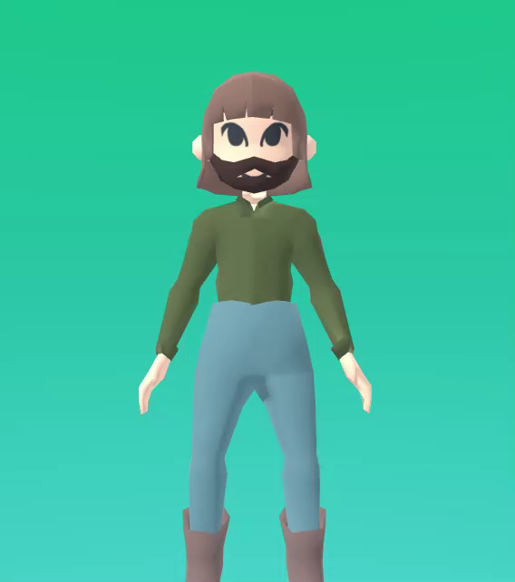

However, upon testing, we discovered that the bone deformations only worked with static poses, as animations overrid them. After some research, I discovered the SkeletonModifier3D node, which has an update process after AnimationMixer is applied. This means that it stores the pose, modifies, then rolls back to the stored pose. So, the modification is not reflected in the model during process(), and instead discarded. To display the modification properly, I was able to create a custom SkeletonModifier3D class, parent it to the Skeleton3D, and retrieve its modified value.
Color Swatches
Another update that I made to the plugin was expanding the color options. In the UI, I added the option for users to set a default color for each mesh. Previously, a color value was hard-coded into the scripts.
I also added color swatches. Users could select an array of colors. Then for each color option, they could pick whether it should be a color picker, swatch, or both. You could also set icons for the color swatches to use rather than the default squares.
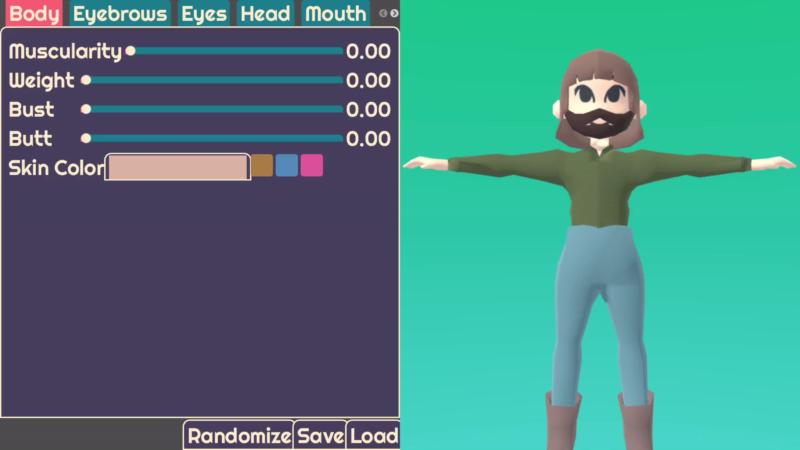
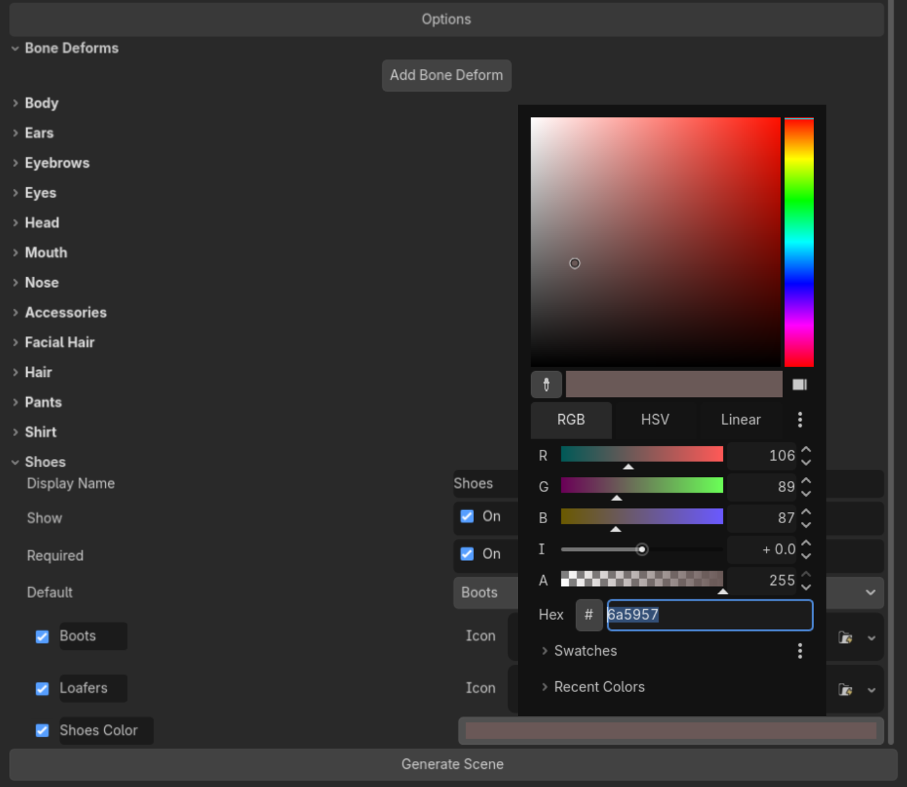
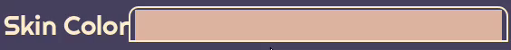
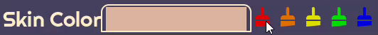